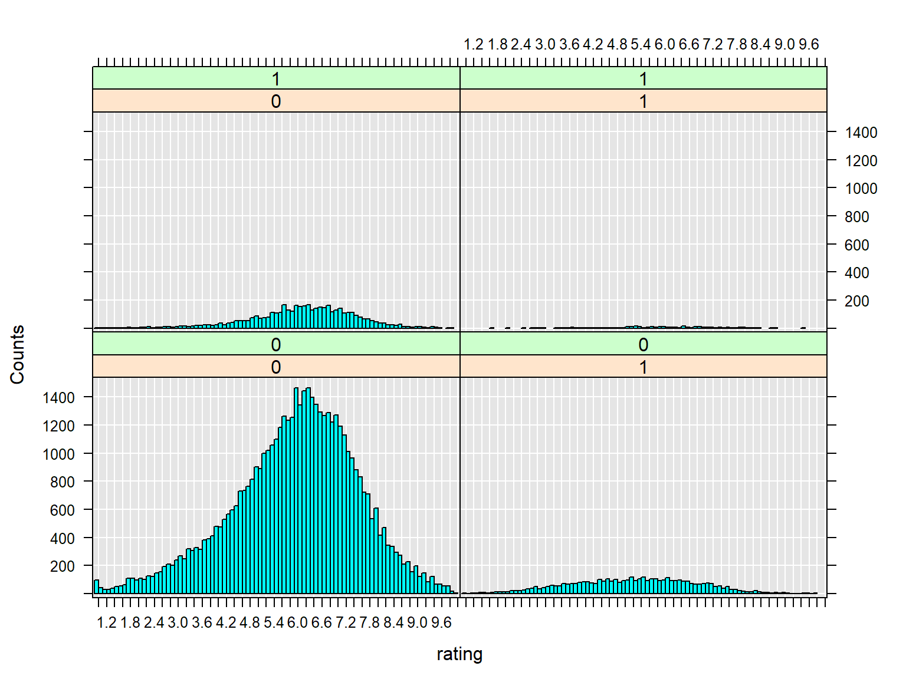
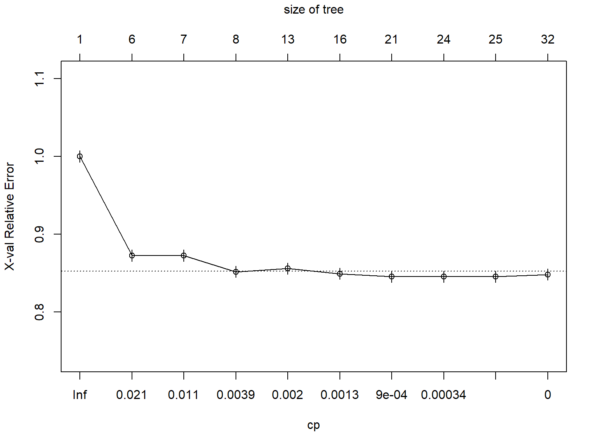
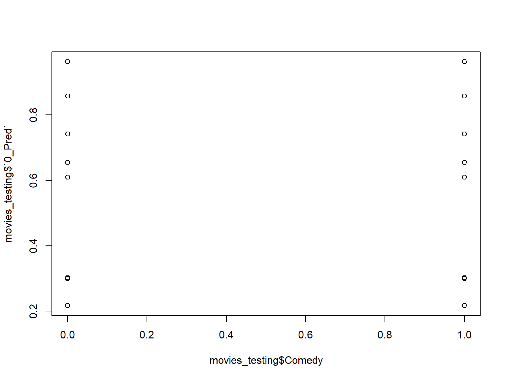
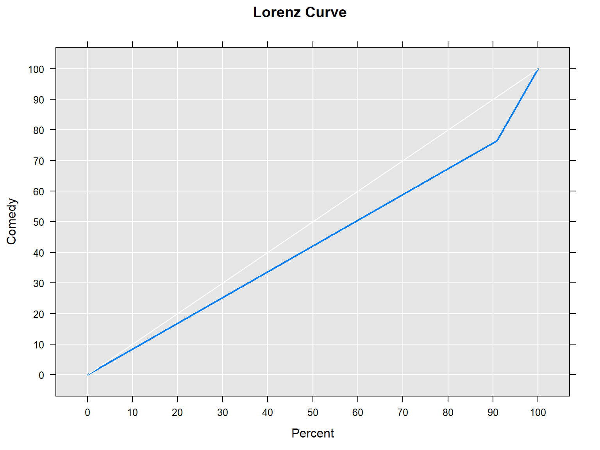
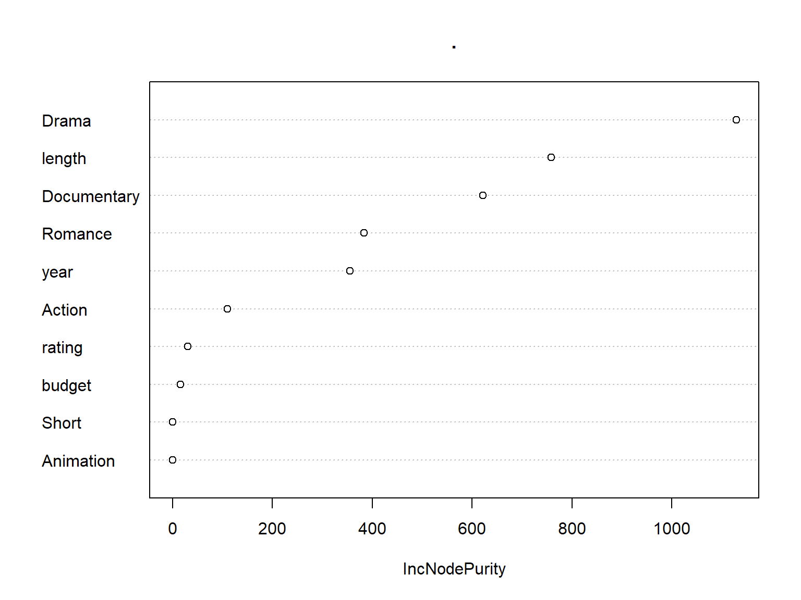

Using Microsoft ML Server for data science
Steph Locke @SteffLocke Locke Data
2018-04-18
About
Steph Locke
- Founder of Locke Data
- Microsoft Data Platform MVP
- International speaker
- Community leader
- Author
Locke Data
Locke Data helps organisations get started with data science.
- Skills transfer
- Program management
- Support and audit
ML Server
Overview
- Runs R and Python
- Has special sauce packages
- Allows for remote computations
- Works on Windows and Linux
Names
- Revolution R (<2016)
- Microsoft R Server (<2017)
- Microsoft ML Server (2017-?)
What’s new
Editions
- Machine Learning Server for Hadoop
- Cloudera, Hortonworks, MapR supported
- Can install on vanilla Hadoop You can install Machine Learning Server on open source Apache Hadoop from http://hadoop.apache.org but we can only offer support for commercial distributions.
- Works with Spark
- Machine Learning Server for Linux
- Machine Learning Server for Windows
- Installs on desktop OS and server OS (not nano)
SQL Server 2016/2017 Editions
- Express (w/ Advanced tools) - R Open or base R
- Standard - R Open or base R
- Enterprise - ML Server
Oo, and Azure SQL now!
High-level reasons to use it
- Less data & compute on devices
- Hefty compute requirements
- Process out-of-memory stuff
- Fast algorithms
- Centrally administered environment
- Microsoft support agreement
ML integrated with SQL
SQL Server Overview
- Use
sp_execute_external_scriptto call R from SQL - Store model objects in SQL Server
- Use certain models in a native PREDICT function
Typical workflows
Local with R
- Collect data with RODBC or something
- Clean up data
- Build model
- Make model useful later
- Save model object to disk
- Save model in DB
Local with R

Local with Microsoft R Client
- Work with xdf or table connections
- Clean up data with
dplyrXdf - Build model using an rx* function
- Make model useful later
- Save model object to disk using
rxSerializeModel - Make into an API using
mrsdeploy - Save model in DB
- Save model object to disk using
Local with Microsoft R Client

Semi-local
- Connect to data using RevoScaleR
- Clean up data with
rx*functions - Build model using an
rx*function - Make model useful later
- Save model object to disk using
rxSerializeModel - Make into an API using
mrsdeploy
- Save model object to disk using
Local with Microsoft R Client

Remote
- Write code
- Run locally on a sample
- Send code to remote server with
mrsdeploy
Remote

Working with out-of-memory datasets
Libraries
Get an xdf
imdb_movies <- rxDataStep(ggplot2movies::movies,
"movies.xdf",
overwrite=TRUE)
rxGetInfo(imdb_movies, verbose = 1)##
## Name: E:\sites\superbuild\pres-azure\pres\movies.xdf
## Number of rows: 58788
## Number of variables: 24
## Number of blocks: 1
##
## Column Information:
##
## Col 1: 'title', String
## Col 2: 'year', Int (Min/Max=1893,2005)
## Col 3: 'length', Int (Min/Max=1,5220)
## Col 4: 'budget', Int (Min/Max=0,200000000)
## Col 5: 'rating', Double (Min/Max=1,10)
## Col 6: 'votes', Int (Min/Max=5,157608)
## Col 7: 'r1', Double (Min/Max=0,100)
## Col 8: 'r2', Double (Min/Max=0,84.5)
## Col 9: 'r3', Double (Min/Max=0,84.5)
## Col 10: 'r4', Double (Min/Max=0,100)
## Col 11: 'r5', Double (Min/Max=0,100)
## Col 12: 'r6', Double (Min/Max=0,84.5)
## Col 13: 'r7', Double (Min/Max=0,100)
## Col 14: 'r8', Double (Min/Max=0,100)
## Col 15: 'r9', Double (Min/Max=0,100)
## Col 16: 'r10', Double (Min/Max=0,100)
## Col 17: 'mpaa', String
## Col 18: 'Action', Int (Min/Max=0,1)
## Col 19: 'Animation', Int (Min/Max=0,1)
## Col 20: 'Comedy', Int (Min/Max=0,1)
## Col 21: 'Drama', Int (Min/Max=0,1)
## Col 22: 'Documentary', Int (Min/Max=0,1)
## Col 23: 'Romance', Int (Min/Max=0,1)
## Col 24: 'Short', Int (Min/Max=0,1)
## ## File name: E:\sites\superbuild\pres-azure\pres\movies.xdf
## Number of observations: 58788
## Number of variables: 24
## Number of blocks: 1
## Compression type: zlibPrep data
imdb_movies %>%
filter(length < 60*5 ) %>%
group_by(Action) %>%
summarise(mean(rating)) ->
action_or_not
head(action_or_not)## Action mean.rating.
## 1 0 5.987748
## 2 1 5.290670Produce charts
imdb_movies %>%
filter(length < 60*5 ) %>%
RevoScaleR::rxHistogram(~rating | F(Action) + F(Romance), data=.)
Why not ggplot2 I hear you say!
library(ggplot2)
imdb_movies %>%
filter(length < 60*5 ) %>%
ggplot(aes(rating)) +
geom_histogram() +
facet_grid(Action~Romance)## Error: ggplot2 doesn't know how to deal with data of class tbl_xdfSample data
imdb_movies %>%
sample_frac(0.7) ->
movies_training
imdb_movies %>%
anti_join(movies_training) ->
movies_testing## Joining by: c("title", "year", "length", "budget", "rating", "votes", "r1", "r2", "r3", "r4", "r5", "r6", "r7", "r8", "r9", "r10", "mpaa", "Action", "Animation", "Comedy", "Drama", "Documentary", "Romance", "Short")Feature reduction
library(caret)
movies_training %>%
rxCor(~votes + length + budget , data = .) %>%
caret::findCorrelation()## integer(0)Feature reduction
## integer(0)Linear regression
movies_training %>%
rxLinMod(rating~ year + length + F(Comedy) + F(Action) + F(Romance) + F(Short) + F(Documentary) + F(Animation) + F(Drama),
data=.
)## Call:
## rxLinMod(formula = rating ~ year + length + F(Comedy) + F(Action) +
## F(Romance) + F(Short) + F(Documentary) + F(Animation) + F(Drama),
## data = .)
##
## Linear Regression Results for: rating ~ year + length + F(Comedy)
## + F(Action) + F(Romance) + F(Short) + F(Documentary) +
## F(Animation) + F(Drama)
## Data: . (RxXdfData Data Source)
## File name:
## C:\Users\steph\AppData\Local\Temp\RtmpQXaDaA\dxTmp1820ace66f9\file18204e342e7c.xdf
## Dependent variable(s): rating
## Total independent variables: 17 (Including number dropped: 7)
## Number of valid observations: 41152
## Number of missing observations: 0
##
## Coefficients:
## rating
## (Intercept) 15.716387184
## year -0.003945851
## length 0.003802654
## F_Comedy=0 -0.109625062
## F_Comedy=1 Dropped
## F_Action=0 0.513137538
## F_Action=1 Dropped
## F_Romance=0 -0.259196288
## F_Romance=1 Dropped
## F_Short=0 -0.891354409
## F_Short=1 Dropped
## F_Documentary=0 -1.002087887
## F_Documentary=1 Dropped
## F_Animation=0 -0.442218919
## F_Animation=1 Dropped
## F_Drama=0 -0.560276711
## F_Drama=1 DroppedLogistic regression
movies_training %>%
rxLogit(Comedy~ rating +year + budget + length + F(Action) + F(Romance) + F(Short) + F(Documentary) + F(Animation) + F(Drama),
data=.
) ->
movies_logit
movies_logit## Logistic Regression Results for: Comedy ~ rating + year + budget +
## length + F(Action) + F(Romance) + F(Short) + F(Documentary) +
## F(Animation) + F(Drama)
## Data: . (RxXdfData Data Source)
## File name:
## C:\Users\steph\AppData\Local\Temp\RtmpQXaDaA\dxTmp1820ace66f9\file18204e342e7c.xdf
## Dependent variable(s): Comedy
## Total independent variables: 17 (Including number dropped: 6)
## Number of valid observations: 3678
## Number of missing observations: 37474
##
## Coefficients:
## Comedy
## (Intercept) -3.981107e+01
## rating 1.159191e-01
## year 1.771178e-02
## budget 7.339086e-09
## length -1.456081e-02
## F_Action=0 1.325100e+00
## F_Action=1 Dropped
## F_Romance=0 -1.315394e+00
## F_Romance=1 Dropped
## F_Short=0 1.772405e+00
## F_Short=1 Dropped
## F_Documentary=0 2.308422e+00
## F_Documentary=1 Dropped
## F_Animation=0 -2.038826e-01
## F_Animation=1 Dropped
## F_Drama=0 1.379021e+00
## F_Drama=1 DroppedDecision trees
Decision trees

Decision trees
Decision trees
Boosted decision trees
movies_training %>%
rxBTrees(Comedy~ rating +year + budget + length + Action + Romance + Short + Documentary + Animation + Drama,
data=.
)##
## Call:
## rxBTrees(formula = Comedy ~ rating + year + budget + length +
## Action + Romance + Short + Documentary + Animation + Drama,
## data = .)
##
##
## Loss function of boosted trees: bernoulli
## Number of boosting iterations: 10
## No. of variables tried at each split: 3
##
## OOB estimate of deviance: 1.157148Clustering
movies_training %>%
rxKmeans(~ rating +year + length + Comedy+ Action + Romance + Short + Documentary + Animation + Drama,
data=.,numClusters = 10)## Call:
## rxKmeans(formula = ~rating + year + length + Comedy + Action +
## Romance + Short + Documentary + Animation + Drama, data = .,
## numClusters = 10)
##
## Data: .
## Number of valid observations: 41152
## Number of missing observations: 0
## Clustering algorithm:
##
## K-means clustering with 10 clusters of sizes 5018, 2, 1760, 3621, 3883, 652, 4944, 1572, 7401, 12299
##
## Cluster means:
## rating year length Comedy Action Romance
## 1 6.341610 1990.354 118.85034 0.2245915 0.115185333 0.130530092
## 2 5.100000 1978.500 4050.00000 0.0000000 0.000000000 0.000000000
## 3 6.234545 1929.485 11.45341 0.6022727 0.008522727 0.014204545
## 4 6.581966 1997.837 18.50621 0.2289423 0.027064347 0.027340514
## 5 6.481535 1950.975 103.09065 0.2892094 0.039144991 0.140870461
## 6 6.948313 1975.992 192.73313 0.1211656 0.225460123 0.205521472
## 7 5.938147 1942.394 72.71784 0.2649676 0.028519417 0.090614887
## 8 6.468575 1957.120 11.12150 0.5591603 0.001908397 0.001908397
## 9 5.454317 1973.166 90.94987 0.2772598 0.099581138 0.042426699
## 10 5.521546 1996.251 90.57850 0.2963656 0.113505163 0.088543784
## Short Documentary Animation Drama
## 1 0.0003985652 0.036867278 0.0053806297 0.59625349
## 2 0.0000000000 0.000000000 0.0000000000 0.00000000
## 3 0.9954545455 0.090340909 0.4130681818 0.07670455
## 4 0.9268157967 0.101629384 0.1455399061 0.17812759
## 5 0.0000000000 0.006180788 0.0005150657 0.54210662
## 6 0.0015337423 0.064417178 0.0030674847 0.58435583
## 7 0.0036407767 0.021237864 0.0060679612 0.37560680
## 8 0.9910941476 0.120865140 0.6049618321 0.03689567
## 9 0.0000000000 0.037562492 0.0120254020 0.35454668
## 10 0.0005691520 0.087649402 0.0187820148 0.36726563
##
## Within cluster sum of squares by cluster:
## 1 2 3 4 5 6 7
## 1241540.4 2737947.9 376162.0 772836.4 894155.3 1990525.5 1042310.0
## 8 9 10
## 229992.8 949107.2 1511836.5
##
## Available components:
## [1] "centers" "size" "withinss" "valid.obs"
## [5] "missing.obs" "numIterations" "tot.withinss" "totss"
## [9] "betweenss" "cluster" "params" "formula"
## [13] "call"Predict on new data
Once you’ve made predictions you can use R packages to do evaluations.
movies_testing %>%
rxPredict(movies_dtree, .) ->
movies_testing
plot(movies_testing$Comedy, movies_testing$`0_Pred`)
ROC curves
movies_testing %>%
rxPredict(movies_dtree, data=.,
predVarNames="Comedy_Pred",
type="vector") %>%
rxRocCurve(actualVarName="Comedy", predVarNames = "Comedy_Pred", data=.)
Lorenz curves
##
Rows Processed: 57502
Variable importance

Pushing to remote servers
Connecting to an environment
Publish model to Microsoft ML Server
Using ML Server in SQL Server
Connecting to an environment
Connecting to an environment env (extra)
A basic execution
EXECUTE sp_execute_external_script
@language = N'R'
,@script = N'OutputDataSet <- InputDataSet'
,@input_data_1 = N'SELECT 1 as Col'
WITH RESULT SETS ((col varchar(50) not null)) | col |
|---|
| 1 |
Model storage table
CREATE TABLE [companyModels] (
[id] int NOT NULL PRIMARY KEY IDENTITY (1,1)
, [name] varchar(200) NOT NULL
, [modelObj] varbinary(max)
, [ValidFrom] datetime2 (2) GENERATED ALWAYS AS ROW START
, [ValidTo] datetime2 (2) GENERATED ALWAYS AS ROW END
, PERIOD FOR SYSTEM_TIME (ValidFrom, ValidTo)
, CONSTRAINT unique_modelname UNIQUE ([name]))
WITH (SYSTEM_VERSIONING = ON (HISTORY_TABLE = dbo.companyModelsHistory)); Model UPSERT stored procedure
CREATE PROCEDURE modelUpsert
@modelname varchar(200) ,
@modelobj varbinary(max)
AS
WITH MySource as (
select @modelname as [name], @modelobj as [modelObj]
)
MERGE companymodels AS MyTarget
USING MySource
ON MySource.[name] = MyTarget.[name]
WHEN MATCHED THEN UPDATE SET
modelObj = MySource.[modelObj]
WHEN NOT MATCHED THEN INSERT
(
[name],
modelObj
)
VALUES (
MySource.[name],
MySource.modelObj
);Add some data
Produce a model
CREATE PROCEDURE generate_flightlm
AS
BEGIN
CREATE TABLE #varcha
([name] varchar(200),
[modelobj] VARCHAR(MAX)
)
INSERT INTO #varcha
EXECUTE sp_execute_external_script
@language = N'R'
,@script = N'
flightLM<-lm(arr_delay ~ month + day + hour, data=InputDataSet, model=FALSE)
OutputDataSet<-data.frame(modelname="modelFromInSQL",
modelobj=paste0( serialize(flightLM,NULL)
,collapse = "") )
'
,@input_data_1 = N'SELECT * FROM flights'
;
INSERT INTO companyModels(name, modelObj)
SELECT [name], CONVERT(VARBINARY(MAX), modelObj, 2)
FROM #varcha
ENDProduce a model
Use model in SQL
DECLARE @mymodel VARBINARY(MAX)=(SELECT modelobj
FROM companymodels
WHERE [name]='modelFromInSQL'
);
EXEC sp_execute_external_script
@language = N'R',
@script = N'
OutputDataSet<-data.frame( predict(unserialize(as.raw(model)), InputDataSet),
InputDataSet[,"arr_delay"]
)
',
@input_data_1 = N'SELECT TOP 5 * from flights',
@params = N'@model varbinary(max)',
@model = @mymodel
WITH RESULT SETS ((
[arr_delay.Pred] FLOAT (53) NULL,
[arr_delay] FLOAT (53) NULL))| arr_delay.Pred | arr_delay |
|---|---|
| -5.385970 | 11 |
| -5.385970 | 20 |
| -5.385970 | 33 |
| -5.385970 | -18 |
| -3.725991 | -25 |
Produce a native model
CREATE PROCEDURE generate_flightlm2
AS
BEGIN
DECLARE @model varbinary(max);
EXECUTE sp_execute_external_script
@language = N'R'
, @script = N'
flightLM<-rxLinMod(arr_delay ~ month + day + hour, data=InputDataSet)
model <- rxSerializeModel(flightLM, realtimeScoringOnly = TRUE)
'
,@input_data_1 = N'SELECT * FROM flights'
, @params = N'@model varbinary(max) OUTPUT'
, @model = @model OUTPUT
INSERT [companyModels] ([name], [modelObj])
VALUES('modelFromRevo', @model) ;
ENDProduce a native model
Use model in SQL
DECLARE @model varbinary(max) = (
SELECT modelobj
FROM companyModels
WHERE [name] = 'modelFromRevo');
SELECT TOP 10 d.*, p.*
FROM PREDICT(MODEL = @model, DATA = flights as d)
WITH("arr_delay_Pred" float) as p;| year | month | day | dep_time | sched_dep_time | dep_delay | arr_time | sched_arr_time | arr_delay | carrier | flight | tailnum | origin | dest | air_time | distance | hour | minute | time_hour | arr_delay_Pred |
|---|---|---|---|---|---|---|---|---|---|---|---|---|---|---|---|---|---|---|---|
| 2013 | 1 | 1 | 517 | 515 | 2 | 830 | 819 | 11 | UA | 1545 | N14228 | EWR | IAH | 227 | 1400 | 5 | 15 | 2013-01-01 05:00:00 | -5.385970 |
| 2013 | 1 | 1 | 533 | 529 | 4 | 850 | 830 | 20 | UA | 1714 | N24211 | LGA | IAH | 227 | 1416 | 5 | 29 | 2013-01-01 05:00:00 | -5.385970 |
| 2013 | 1 | 1 | 542 | 540 | 2 | 923 | 850 | 33 | AA | 1141 | N619AA | JFK | MIA | 160 | 1089 | 5 | 40 | 2013-01-01 05:00:00 | -5.385970 |
| 2013 | 1 | 1 | 544 | 545 | -1 | 1004 | 1022 | -18 | B6 | 725 | N804JB | JFK | BQN | 183 | 1576 | 5 | 45 | 2013-01-01 05:00:00 | -5.385970 |
| 2013 | 1 | 1 | 554 | 600 | -6 | 812 | 837 | -25 | DL | 461 | N668DN | LGA | ATL | 116 | 762 | 6 | 0 | 2013-01-01 06:00:00 | -3.725991 |
| 2013 | 1 | 1 | 554 | 558 | -4 | 740 | 728 | 12 | UA | 1696 | N39463 | EWR | ORD | 150 | 719 | 5 | 58 | 2013-01-01 05:00:00 | -5.385970 |
| 2013 | 1 | 1 | 555 | 600 | -5 | 913 | 854 | 19 | B6 | 507 | N516JB | EWR | FLL | 158 | 1065 | 6 | 0 | 2013-01-01 06:00:00 | -3.725991 |
| 2013 | 1 | 1 | 557 | 600 | -3 | 709 | 723 | -14 | EV | 5708 | N829AS | LGA | IAD | 53 | 229 | 6 | 0 | 2013-01-01 06:00:00 | -3.725991 |
| 2013 | 1 | 1 | 557 | 600 | -3 | 838 | 846 | -8 | B6 | 79 | N593JB | JFK | MCO | 140 | 944 | 6 | 0 | 2013-01-01 06:00:00 | -3.725991 |
| 2013 | 1 | 1 | 558 | 600 | -2 | 753 | 745 | 8 | AA | 301 | N3ALAA | LGA | ORD | 138 | 733 | 6 | 0 | 2013-01-01 06:00:00 | -3.725991 |
Use model in SQL
DECLARE @model varbinary(max) = (
SELECT modelobj
FROM companyModels
WHERE [name] = 'modelFromRevo');
EXEC sp_rxPredict
@model = @model,
@inputData = N'SELECT TOP 10 month , day , hour FROM flights'| arr_delay_Pred |
|---|
| -5.385970 |
| -5.385970 |
| -5.385970 |
| -5.385970 |
| -3.725991 |
| -5.385970 |
| -3.725991 |
| -3.725991 |
| -3.725991 |
| -3.725991 |
Wrap up
Other Microsoft ML things
- Azure ML
- GUI data science
- R & Python
- Notebooks
- Code deployment potential
- Easy webservices
- Azure Batch
- R in containers
- Azure Container Services
- Azure Container Instances
- R in PowerBI
- Interactive reports
- R data source
- R graphics
- Latest additions
- Azure ML workbench
- Azure Databricks
- VS for AI
Conclusion
- Thank you
- Get the slides via itsalocke.com
- Get in touch! @SteffLocke